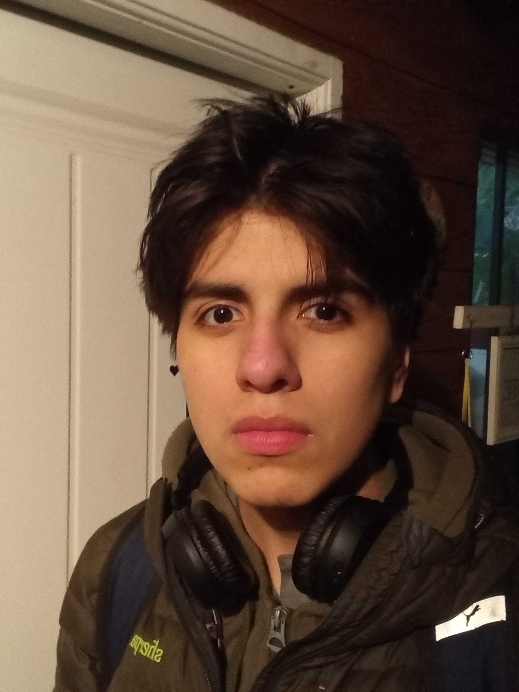
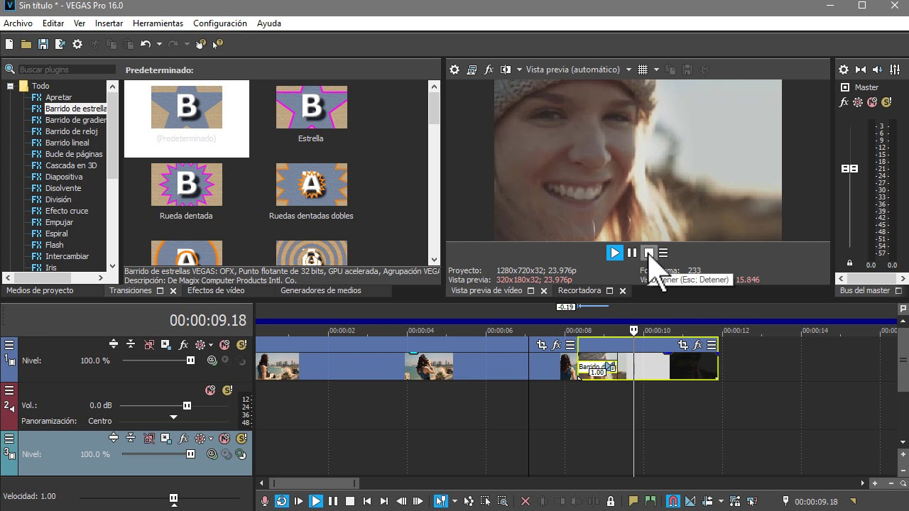
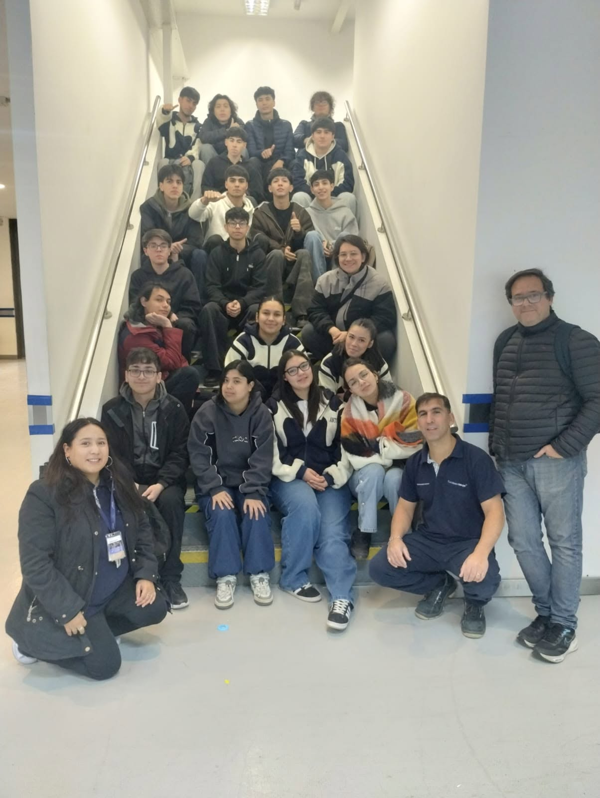
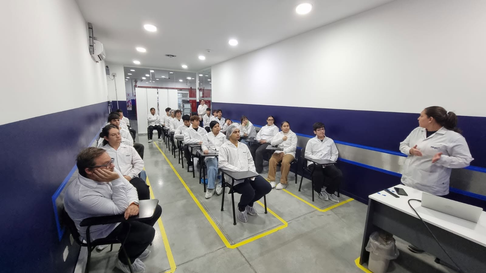
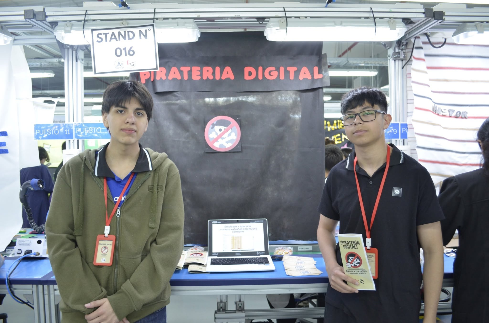

RIO GRANDE, ARGENTINA
Leonelrodrigoponce@gmail.com
LEONEL PONCE
Hardware • Software • Desarrollo Web • Edición

01 / SOBRE MI
LEONEL R0DRIGO
PONCE
Actualmente curso la Tecnicatura en Informática en el Colegio Provincial Dr. Ernesto Guevara.
Me apasiona el hardware, el software y la edición de video, mientras continúo desarrollando mis habilidades en HTML y CSS.
Siempre busco aprender nuevas tecnologías, resolver problemas y crear proyectos que me permitan seguir creciendo.
02 / QUE HAGO
HARDWARE
Diagnóstico · Armado · Mantenimiento · Optimización
Me destaco en el diagnóstico y reparación de equipos, armado de computadoras, mantenimiento preventivo y optimización del rendimiento del hardware.
SOFTWARE
Windows · Solución de problemas · Configuración
Tengo experiencia instalando sistemas operativos, configurando equipos y solucionando problemas de Windows.

DESARROLLO WEB
HTML · CSS · Aprendiendo JavaScript
Desarrollo sitios web modernos utilizando HTML y CSS, priorizando un diseño limpio, responsive y atractivo.

EDICIÓN DE VIDEO
Vegas Pro 21 · Montaje · Producción audiovisual
Realizo edición y montaje audiovisual cuidando el ritmo, la estética y la calidad visual de cada proyecto.
03 / EXPERIENCIA
PRACTICAS
PROFESIONALIZANTES
Experiencia realizada en Mirgor, participando en un entorno laboral real, aplicando conocimientos técnicos, responsabilidad y trabajo en equipo.

CAPACITACIÓN
MIRGOR
Capacitación como operario de línea, incorporando conocimientos sobre procesos industriales, organización y trabajo grupal.

PIRATERÍA
DIGITAL
Participación en un stand educativo realizado en Mirgor sobre piratería digital, concientización y seguridad informática.
